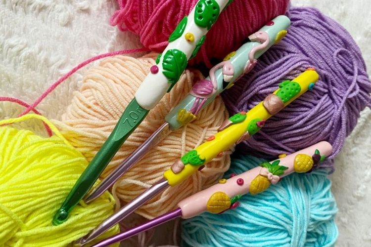

Szydełkowanie to technika wykonywania ozdobnych wzorów i dziergania za pomocą szydełka. Może być używane do tworzenia różnych rodzajów wyrobów, takich jak
serwetki, szale, czy torebki. Szydełkowanie jest bardzo popularne wśród osób lubiących rękodzieło i tworzenie rzeczy własnoręcznie.
Szydełka to popularne narzędzie do rękodzieła, które służy do wykonywania wzorów z włóczki.
Można je używać do tworzenia różnorodnych przedmiotów, takich jak ubrania, ozdoby czy akcesoria.
Istnieje wiele rodzajów szydełek, różniących się wielkością i kształtem, co pozwala na różnorodność technik i efektów.

Szydełkowanie to pasjonujące hobby, które pozwala na tworzenie unikatowych rzeczy i rozwijanie kreatywności.
Szydełko – narzędzie zakończone haczykiem, służące do ręcznego wyrobu dzianiny poprzez przeciąganie nici przez pętelki.
Dwa podstawowe typy szydełek to klasyczne (krótkie, proste) i tunezyjskie (długie jak druty do robótek, zakończone ogranicznikiem
zapobiegającym zsuwaniu się robótki.